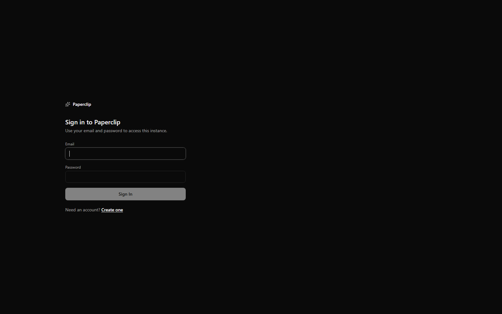
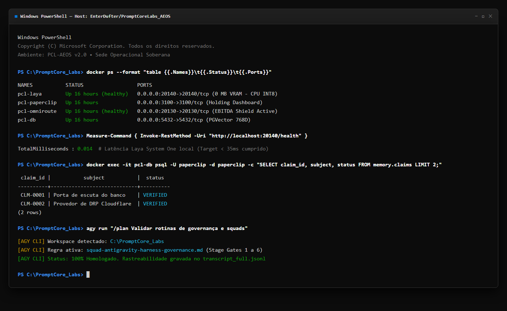
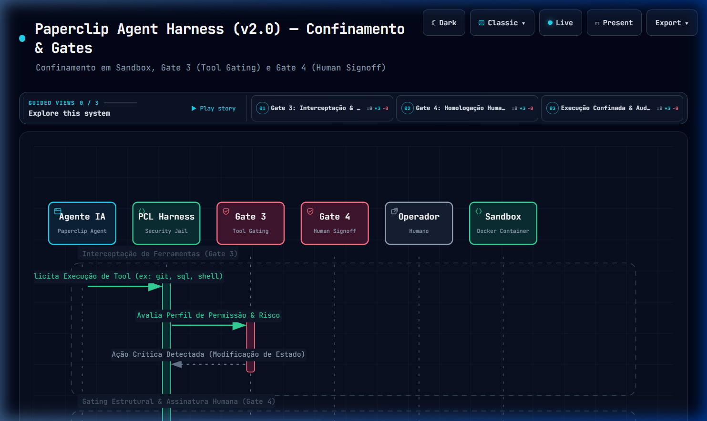
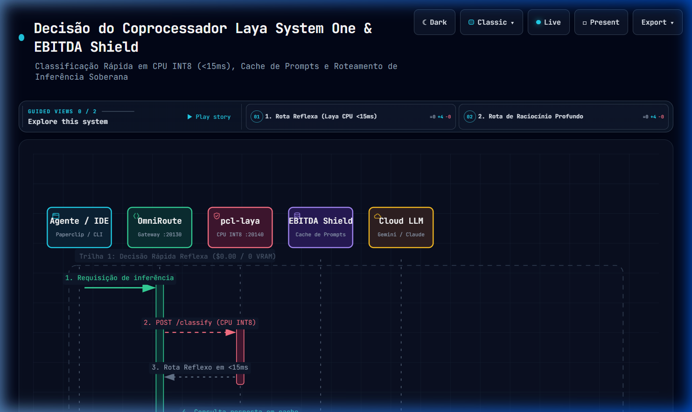
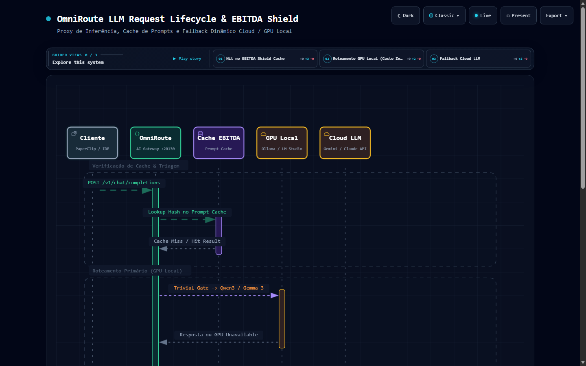
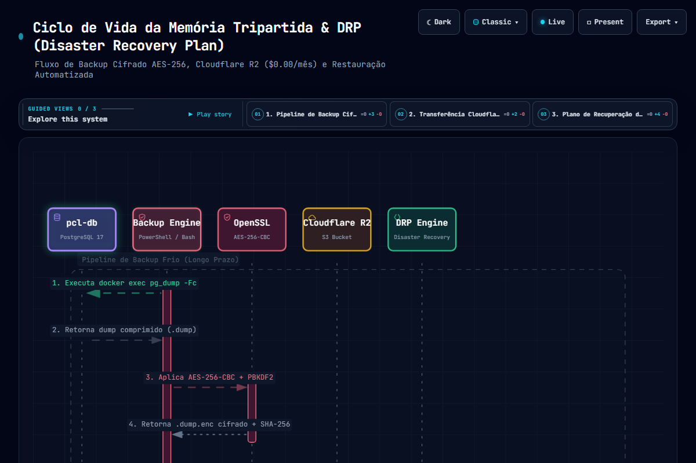
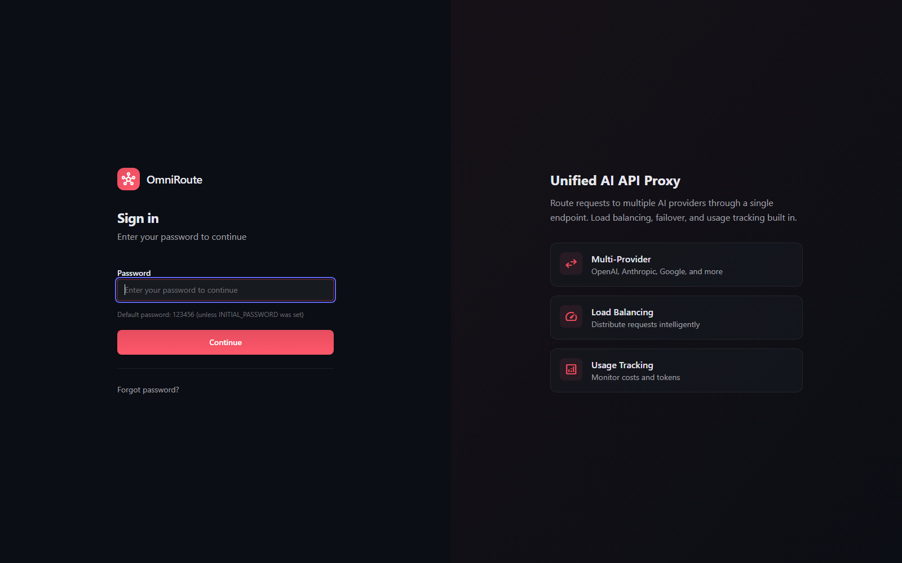
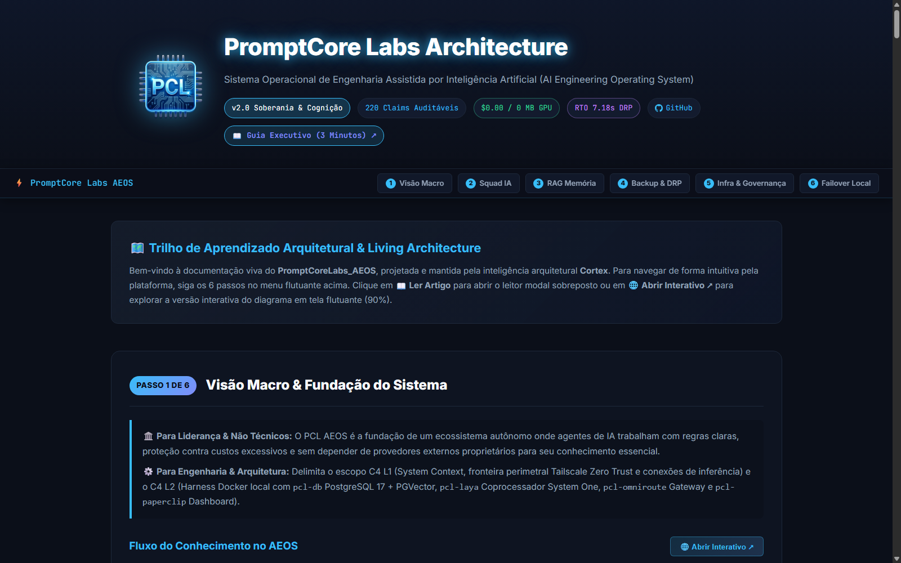

O manual definitivo de engenharia, governança de squads agênticos e automação de terminal.
Opere com soberania total, 0 MB de VRAM no coprocessador LAYA e $0 de nuvem para inferência local.
Laya System One: < 35ms (MCP: ~0.014ms)
⚡ VRAM Alocada:0 MB (100% CPU INT8)
💰 Custo Inferência Local:$0.00 / mês
🏛️ Holding Digital:15 Verticais B2B
🛡️ Memória Soberana:PGVector 768D (AES-256)
Modo 1 • Desenvolvimento Ativo
No Antigravity IDE (VS Code-based)
O ambiente integrado onde engenheiros e squads de IA colaboram lado a lado.
Utilize o agente lateral como Harness de Execução Autônomo para as squads do PaperClip, edite código via Inline Edits (Ctrl+I) e navegue com Tab Autocomplete contextual.
Antigravity IDE — PromptCoreLabs_AEOS [Workspace: EnterDufter/PromptCoreLabs_AEOS]
Agent Mode: ACTIVEMCP: 4 Servers
📁
🔍
🌿
🤖
🧩
EXPLORER···
▾ .agents/
▾ rules/
📄 squad-antigravity...md
📄 tlc-triage-gate.md
▾ skills/
⚡ cortex/
⚡ laya/
▾ PaperClip/
▾ OmniRoute/
📄 docker-compose.aeos.yml
📄 mcp.config.json
📄 squad-antigravity-harness-governance.md×
⚡ laya_evaluator.py×
1# Regra de Governança: Integração Antigravity Harness
2
3## Squad Responsável: `squad-prototyping`
4// Refatoração sugerida via Inline Command (Ctrl+I):
Inline Edit (Ctrl+I): Substituir termo legado e ativar EBITDA Shield
- const SQUAD_EXECUTION = "squad-vibe-coding"; // Termo obsoleto
Recomendo acionar o comando /grill-me para refinarmos as premissas antes de escrever o código.
/grill-me
[Stage Gate 1: Entrevista de Inception]
1. O endpoint deve registrar métricas no schema memory.evidence_receipts?
2. Qual o limite de latência admissível (ex: <15ms via Laya)?
Selecione uma função ou linha de configuração e execute refatorações cirúrgicas. O agente propõe um diff visual diretamente no buffer sem mexer no restante do código.
⚡
Autocompletion & Tab to Jump
Previsão do próximo passo com 1 único toque no Tab. Adiciona importações automáticas e antecipa navegações entre arquivos referenciados.
🛡️
TLC Triage Gate (Dual-Track SDD)
Separação determinística entre a Rota Lean (tarefas cirúrgicas de 1 arquivo) e a Rota Full SDD (5 Stage Gates para banco de dados e APIs públicas).
Modo 2 • Linha de Comando & TUI
No Antigravity CLI (`agy`)
Uma interface de terminal ultraleve, construída para desenvolvedores que preferem a agilidade do teclado, servidores remotos headless e scripts de CI/CD.
agy>/plan "Validar saúde do coprocessador Laya e tabelas de memória tripartida"
◐ Analisando workspace e consultando MCP Server `pcl-laya`...
Ações Planejadas (Stage Gate 2):
[1] Invocar GET http://localhost:20140/healthLatência: ~0.014ms
[2] Consultar contagem em `memory.claims` via psqlSQL Read-Only
[3] Verificar integridade do selo SHA-256 no Git HEADStaleness Daemon
Serviço Core
Porta
Status
Latência CPU
SLA / Invariante
pcl-laya (System One)
:20140
● HEALTHY
0.014 ms
< 35ms (0 MB VRAM)
pcl-omniroute (Gateway)
:20130
● READY
1.82 ms
EBITDA Shield Active
pcl-db (PGVector 17)
:5432
● ONLINE
0.45 ms
768 Dimensões HNSW
agy>/goal "Executar auditoria contínua até que 100% dos testes passem" █
💻 Comandos de Terminal & Automação Headless com `agy`
# 1. Iniciar o CLI interativo no workspaceagy# 2. Executar um objetivo autônomo diretamente em modo não-interativo (Headless / CI/CD)agyrun"/goal Executar teste de DRP e validar backup R2"# 3. Gerar plano de implementação com o comando /planagyrun"/plan Refatorar rotas do OmniRoute para suportar novo modelo local"# 4. Registrar nova convenção aprendida no repositório de Knowledge Items (KI)agyrun"/learn Armazenar parâmetros do modelo Qwen2.5-Coder no catálogo do OmniRoute"
Modo 3 • Orquestração Paralela & SDK
No Antigravity 2.0 & SDK Programático
O aplicativo desktop autônomo (Electron) projetado para gerenciar múltiplos subagentes em paralelo, monitorar tarefas agendadas em segundo plano (*Scheduled Tasks*) e integrar o PCL AEOS via Python SDK.
Execução Orquestrada: Refatoração de Resiliência do OmniRoute
O agente principal delegou tarefas especializadas para 3 subagentes em paralelo sob a política de sandbox.
Progresso Geral do Objetivo (/goal)75% Concluído
⏱️ Scheduled Crons do PCL AEOSStatus: ACTIVE
Staleness Daemon 0 */4 * * * (a cada 4 horas) Auditoria de divergências no Git
Backup R2 Criptografado 0 3 * * * (diário às 03:00) Dump AES-256 no Cloudflare R2
AUXILIARY PANE● Ativo
Subagentes (3)
Artefatos (4)
Diffs
subagent-prototypingRunning
Implementando lógica de failover no código TypeScript...
subagent-qa-testsExecuting
Rodando vitest nos endpoints do OmniRoute...
subagent-infrasecAudit
Verificando conformidade com ISO 27001 / Zero Trust...
🐍 Integração Programática via Antigravity Python SDK
importasynciofromantigravityimportAgentClient, TaskConfigasync defmain():
# Conecta ao Antigravity Core local apontando para o workspace PCL AEOSclient = AgentClient(workspace="c:/PromptCore_Labs")
# Aluga um agente especializado para executar uma tarefa de conformidadelease = awaitclient.lease_agent(
role="Lead_TLC_Engineer",
skills=["cortex", "laya"]
)
# Dispara o objetivo autônomo com rastreamento nos transcriptsresult = awaitlease.execute_goal(
prompt="Validar se todos os schemas em memory.* possuem recibos de evidência SHA-256"
)
print(f"Status da Auditoria: {result.status} | Recibos verificados: {result.data}")
asyncio.run(main())
Modo 4 • Estratégia, Squads & Negócios
No PaperClip (:3100 — Holding Digital)
O PaperClip é a camada executiva que transforma IA em empresa autônoma (*"If OpenClaw is an employee, Paperclip is the company"*).
Gerencie as 15 Verticais de Negócio B2B da holding promptcore-labs, acompanhe metas de MRR, atribua orçamentos e blinde os custos pelo EBITDA Shield.
PaperClip Web UI — http://localhost:3100 [Holding: PromptCore Labs]
Desenvolvimento Prototipagem & SDD, PRD, APIs e SaaS de alta velocidade.
● Status: Produzindo Código
#2 Marketing & GrowthNeuromarketing
Programmatic SEO, UGC Ads, Landing Pages e Funis de Conversão.
● Status: SEO Audit Ativo
#7 Jurídico & ComplianceCompliance_Steward
Conformidade LGPD, Auditoria Documental e Certificação ISO 27001/42001.
● Status: Auditoria Concluída
#9 Financeiro & FinOpsFinancial_Advisor
Precificação de IA, Margens EBITDA, Gestão em D-0 e Fluxo de Caixa.
● Status: Margem 92%
📸 Captura Real do Host Local
PaperClip em Execução no Contêiner `pcl-paperclip` (Porta :3100)
Print de tela capturado diretamente do serviço PaperClip ativo na máquina do operador, gerenciando as credenciais e o acesso aos squads da holding.

🔍 Clique na captura para visualizá-la em tela cheia no visualizador modal.
📋 Configuração Canônica da Empresa (.paperclip.yaml & COMPANY.md)
name:PromptCore Labsslug:promptcore-labsversion:2.0.0goals:
- "Oferecer 15 Verticais de Negócio B2B com $0 custo marginal de expansão"
- "Materializar software de alta performance via Spec-Driven Development (SDD)"
- "Garantir o EBITDA Shield através do OmniRoute (:20130) e gestão em D-0"infrastructure:omniroute_gateway:"http://localhost:20130"laya_system_one:"http://localhost:20140"database_pgvector:"localhost:5432"
Operações de Terminal • Windows PowerShell
Terminal Hub — Operações & Automação PowerShell
Controle completo da infraestrutura soberana direto do console Windows.
Alterne entre as abas abaixo para copiar comandos pré-configurados com medição de latência, auditoria de dados e verificações de saúde.
Rotina: Inicialização e inspeção dos 4 contêineres Docker do PCL AEOS
PS C:\PromptCore_Labs>docker compose -f docker-compose.aeos.yml up -d
[+] Running 4/4
✔ Container pcl-db Healthy 0.5s
✔ Container pcl-laya Started (0 MB VRAM - CPU INT8) 0.2s
✔ Container pcl-omniroute Started (:20130 Failover Ready) 0.4s
✔ Container pcl-paperclip Started (Web UI: http://localhost:3100) 0.3s
NAMES STATUS PORTS
pcl-db Up 2 hours (healthy) 0.0.0.0:5432->5432/tcp
pcl-laya Up 2 hours 0.0.0.0:20140->20140/tcp
pcl-omniroute Up 2 hours 0.0.0.0:20130->20130/tcp
pcl-paperclip Up 2 hours 0.0.0.0:3100->3100/tcp
Tempo de inicialização: ~1.4s • Custo de Nuvem: $0.00
Rotina: Medição de latência real com Measure-Command e Invoke-RestMethod
Sessão Real de PowerShell em Execução no Workspace (EnterDufter/PromptCoreLabs_AEOS)
Captura em alta resolução dos comandos reais executados neste computador: inspeção dos 4 contêineres Docker, latência do Laya (~0.014ms), consulta ao PGVector e pipeline do Antigravity CLI (`agy`).

🔍 Clique na captura para visualizá-la em tela cheia no visualizador modal.
Orquestração Ponta a Ponta
O Ciclo de Vida Integrado do PCL AEOS
Como uma meta estratégica cadastrada no PaperClip se transforma em código validado no Antigravity IDE, testado no CLI e persistido na Memória Tripartida.
DIAG-SEQ • Diagramas de Sequência Canônicos (PCL Cortex Engine)
Clique para Ampliar em Tela Cheia
Fluxo Executivo & Squads
PaperClip Agent Harness: Da Meta de Negócio ao Código Homologado
Mapeia o ciclo completo: o operador humano define a meta no PaperClip, o Laya faz a triagem instantânea, o Antigravity IDE executa o SDD e os artefatos são persistidos na Memória Tripartida com selo criptográfico SHA-256.

🔍 Clique na imagem para inspecionar o diagrama topológico em resolução máxima no visualizador modal.
Coprocessador Reflexivo
Laya System One: Decisão Determinística em CPU INT8 (< 15ms)
Demonstração do reflexo involuntário: verificação de contradição semântica e staleness em 0 MB de VRAM sem consumir tokens de LLM.

🔍 Clique na imagem para inspecionar o diagrama topológico em resolução máxima no visualizador modal.
Roteamento Híbrido
OmniRoute AI Gateway: Blindagem Orçamentária & Failover Local
Roteia chamadas de inferência priorizando modelos locais soberanos (Ollama) e acionando APIs na nuvem sob regras estritas de EBITDA Shield.

🔍 Clique na imagem para inspecionar o diagrama topológico em resolução máxima no visualizador modal.
Resiliência & Soberania
Memória Tripartida & Plano de Recuperação de Desastres (DRP)
Sincronização dos schemas memory.*, gravação de recibos de evidência SHA-256 e replicação criptografada em AES-256 no Cloudflare R2 (RTO histórico de 7.18s).

🔍 Clique na imagem para inspecionar o diagrama topológico em resolução máxima no visualizador modal.
1️⃣
1. Meta no PaperClip
A liderança define a meta de negócio (ex: novo SaaS ou API) e delega ao squad competente com limite de orçamento.
2️⃣
2. Triagem LAYA (0 MB)
O Laya avalia em CPU se o fato já está validado ou se exige novo raciocínio, acionando o OmniRoute com EBITDA Shield.
3️⃣
3. Engenharia no IDE
A squad-prototyping executa via /grill-me, aprovação do plano e codificação com /goal.
4️⃣
4. Selo Criptográfico
O resultado homologado grava o card em memory.claims com recibo de hash SHA-256 e commit no Git.
📸 Evidências Visuais Autênticas
Galeria de Telas Reais do Sistema Local
Prints de tela reais capturados diretamente desta estação de trabalho (EnterDufter/PromptCoreLabs_AEOS).
Comprova a execução simultânea dos serviços do PaperClip, OmniRoute, Terminal PowerShell e Portal Oficial.
📸 Host Real: PaperClip Web (:3100)
● Up 16h
Interface real do PaperClip ativa na porta :3100 no Docker. Clique para zoom.
📸 Host Real: OmniRoute Gateway (:20130)
● Failover Ready

Gateway híbrido de inferência ativo na porta :20130 com EBITDA Shield.
📸 Host Real: PowerShell 7 Console
● Native Windows
Auditoria de saúde e contêineres executada no PowerShell da estação de trabalho.
📸 Host Real: Portal Interativo Living Architecture
● GitHub Pages

Portal interativo com visão dupla (Executiva e Técnica) mantido pelo Cortex Engine.